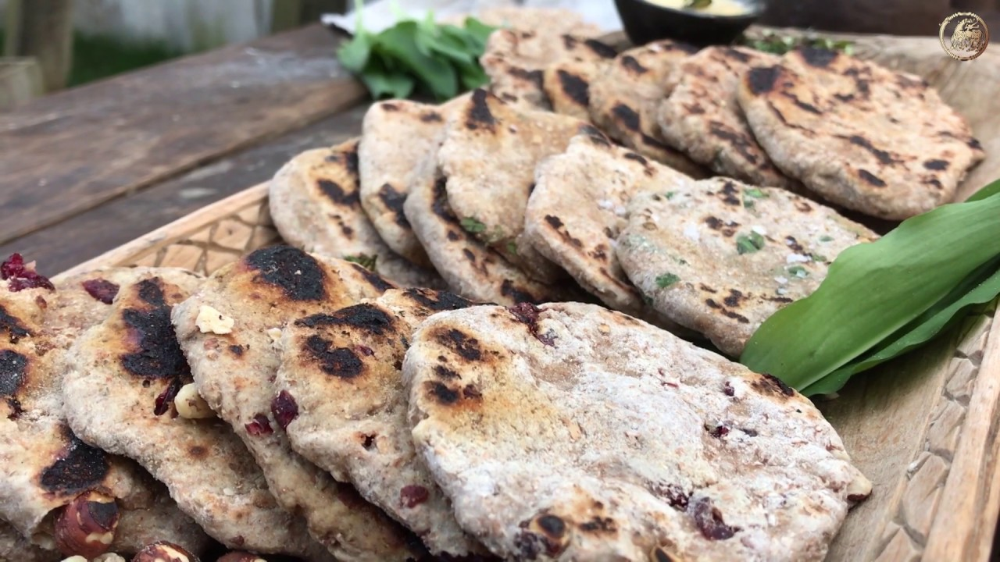

Viking Flatbread

Description
This simple and versatile flatbread is made with only a few ingredients and can be enjoyed with stews, soups, or as a standalone snack.
Ingredients
- 2 cups whole wheat flour
- 1 cup water
- 1 tsp salt
Steps
- In a large bowl, mix the flour and salt.
- Gradually add the water, stirring until a soft dough forms. Knead the dough for a few minutes until smooth.
- Divide the dough into 6-8 equal pieces and roll each piece into a thin, round flatbread.
- Heat a dry frying pan over medium heat. Cook each flatbread for 2-3 minutes on each side, or until puffed and golden brown.
- Serve warm.